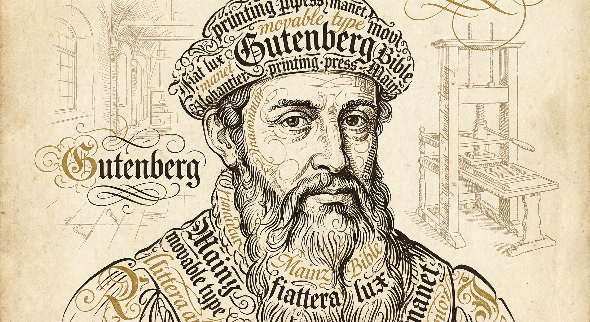
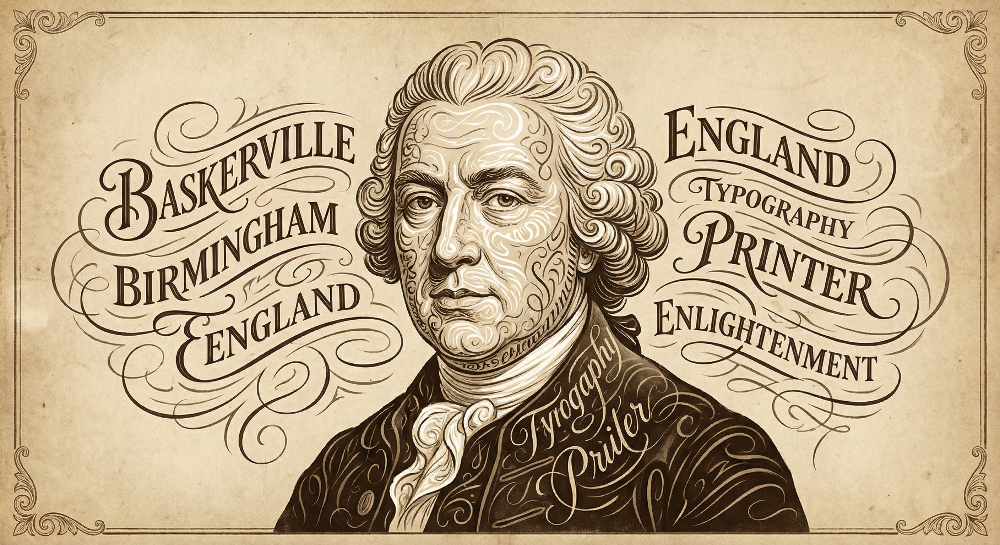
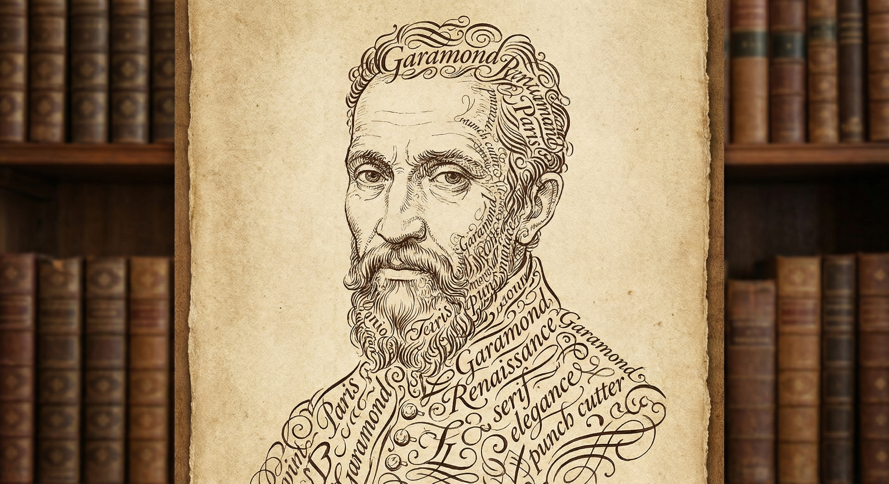
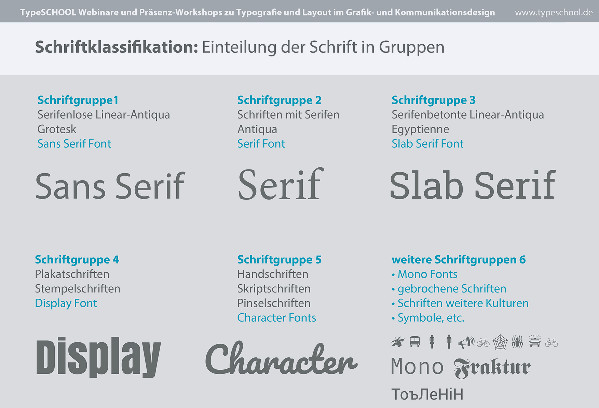
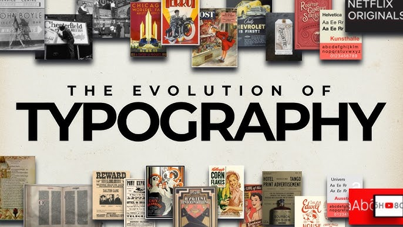
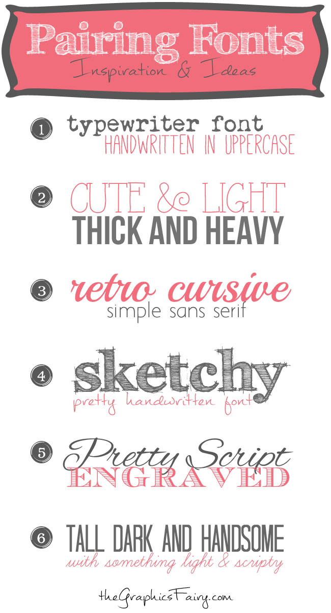
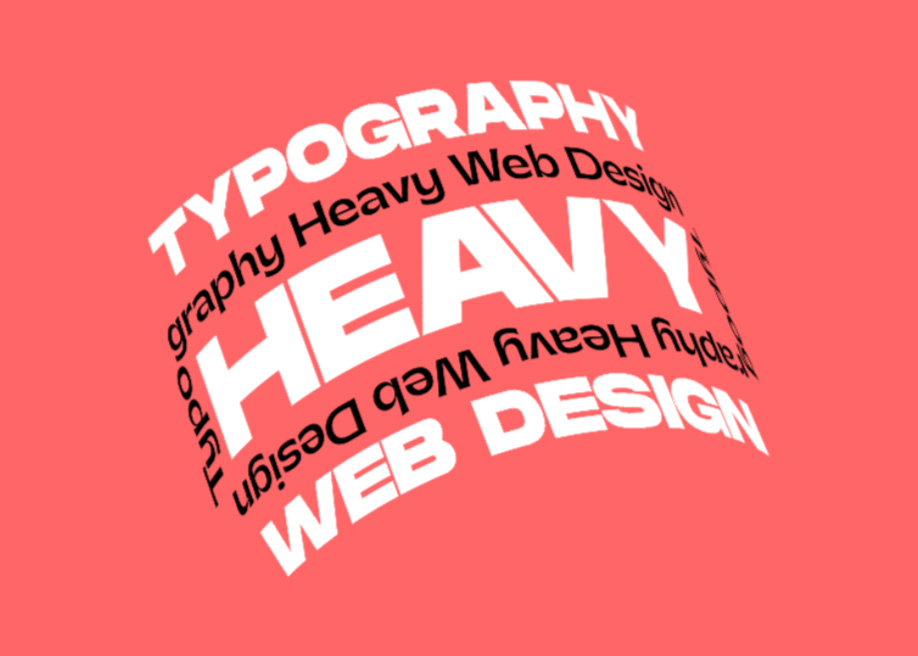

Er erfand den Buchdruck mit beweglichen Metalllettern. Dadurch konnten Bücher schneller und günstiger hergestellt werden, was Bildung und Wissen stark verbreitete.

Er entwickelte sehr klare und elegante Schriften mit starkem Kontrast. Außerdem verbesserte er Drucktechniken und Papierqualität nachhaltig.

Er war ein bedeutender Schriftgestalter der Renaissance. Seine Garamond-Schriften sind besonders gut lesbar und werden bis heute im Buch- und Digitaldesign verwendet.

Die Schriftklassifizierung ist die Einteilung von Schriften in verschiedene Kategorien basierend auf ihren visuellen Merkmalen. Sie hilft Designern, die passende Schrift für ein Projekt auszuwählen und eine harmonische Typografie zu schaffen.

Die Schriftgeschichte umfasst die Entwicklung von Schriftsystemen von den frühesten Piktogrammen bis zu modernen digitalen Schriften. Sie zeigt, wie sich die Schrift im Laufe der Zeit verändert und an verschiedene kulturelle und technologische Bedürfnisse angepasst hat.

Die kreative Schriftmischung ist die Kunst, verschiedene Schriftarten in einem Design zu kombinieren, um visuelles Interesse und Hierarchie zu schaffen. Sie erfordert ein gutes Verständnis von Schriftmerkmalen und Designprinzipien, um eine harmonische und ansprechende Typografie zu erreichen.

Webtypografie bezieht sich auf die Gestaltung und Verwendung von Schriftarten im Webdesign. Sie umfasst die Auswahl von Schriftarten, die Anpassung von Größen und Abständen sowie die Optimierung der Lesbarkeit auf verschiedenen Geräten und Bildschirmgrößen.
Trends in der Typografie verändern sich ständig, beeinflusst von kulturellen, technologischen und ästhetischen Entwicklungen. Aktuelle Trends umfassen die Rückkehr zu handgezeichneten Schriften, die Verwendung von variablen Fonts und die Integration von 3D-Elementen in typografische Designs.